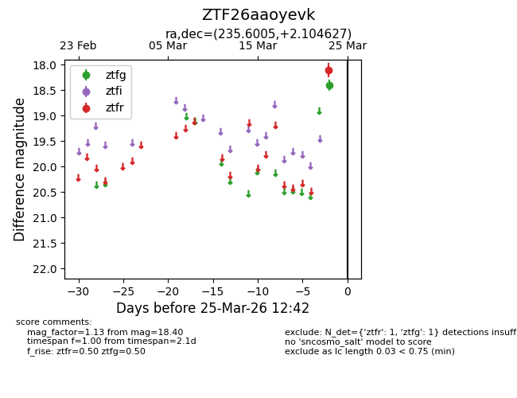
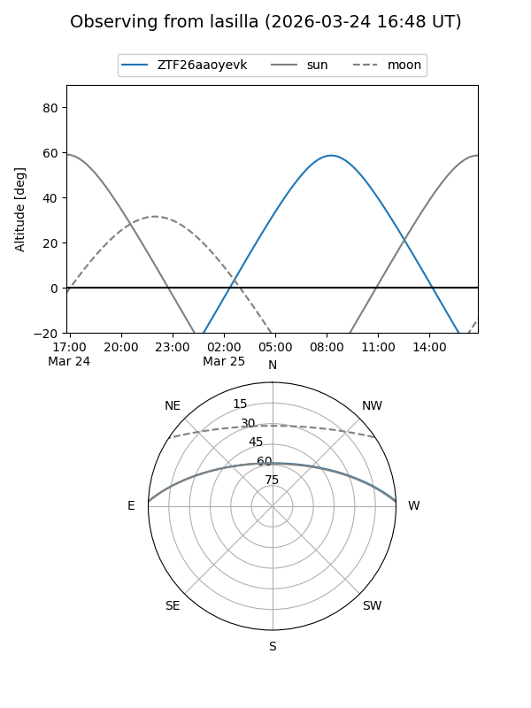
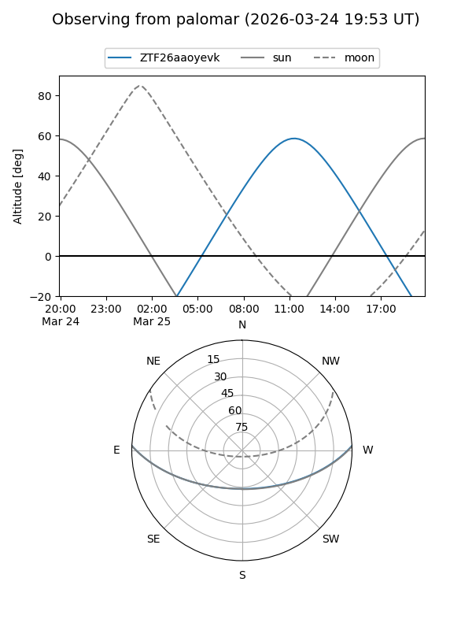

ZTF26aaoyevk
Target ZTF26aaoyevk at 2026-03-25 12:44
Aliases and brokers:
FINK: link
Lasair: link
ALeRCE: link
alt names
ZTF26aaoyevk (ztf,fink_ztf)
Coordinates:
equatorial (ra, dec) = 235.6005,+2.10463
equatorial (HMS+DMS) = 15:42:24.12,+02:06:16.66
galactic (l, b) = (8.9312,+42.06226)
Flags:
Photometry:
last ztfg=18.40, ztfr=18.10
1 ztfg, 1 ztfr detections
Lightcurve

Visibility


Additional plots